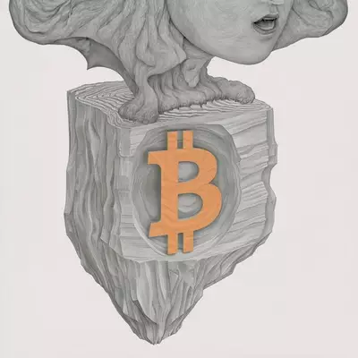
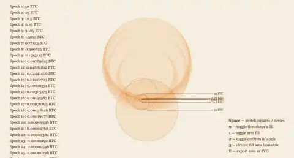
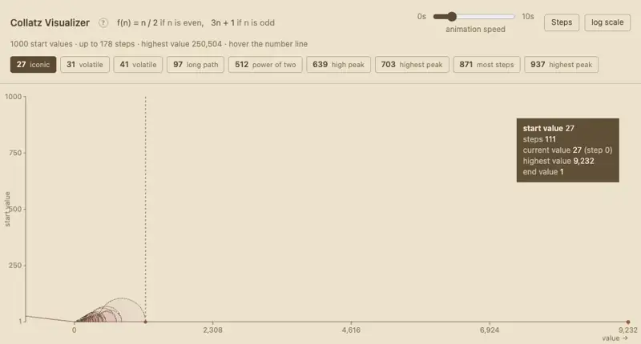

Pool Caustics
The light reflections that drift across a swimming pool surface, rebuilt from directional waves and contour lines. Thirteen sliders to play with.
- Canvas 2D
- interactive
- one file

Wave Function Collapse
A tile map that builds itself: the least certain cell picks a tile, the constraint travels to its neighbours, and the grid settles — on squares, on hexagons, or wrapped around a globe.
- Canvas 2D
- interactive
- one file

Whackaddodle MJ zoom
Twelve Midjourney frames, each zoomed out from the last, measured and stitched back into one continuous camera move that runs out and back in.
- film · 37s
- python + ffmpeg

Bitcoin Halving Animation
Eight nested shapes for the block-reward epochs, hinged in a chain that opens and folds back. Squares hinge at a corner, circles where they touch; the area underneath traces every rotation, so the overlaps darken toward the centre.
- SVG + Canvas 2D
- interactive
- one file

Collatz Visualizer
The Collatz sequences for the start values 1 to 1000. Hover the number line to pick one and watch it hop — halve when even, triple and add one when odd — until it lands on 1.
- Canvas 2D
- interactive
- python + csv